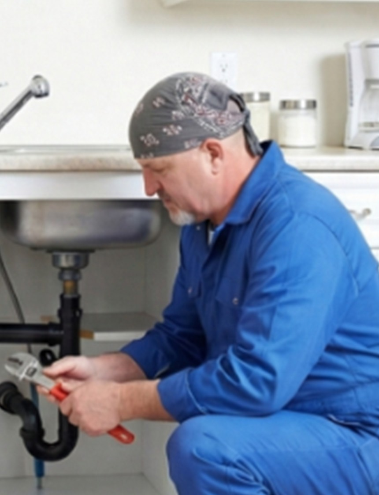
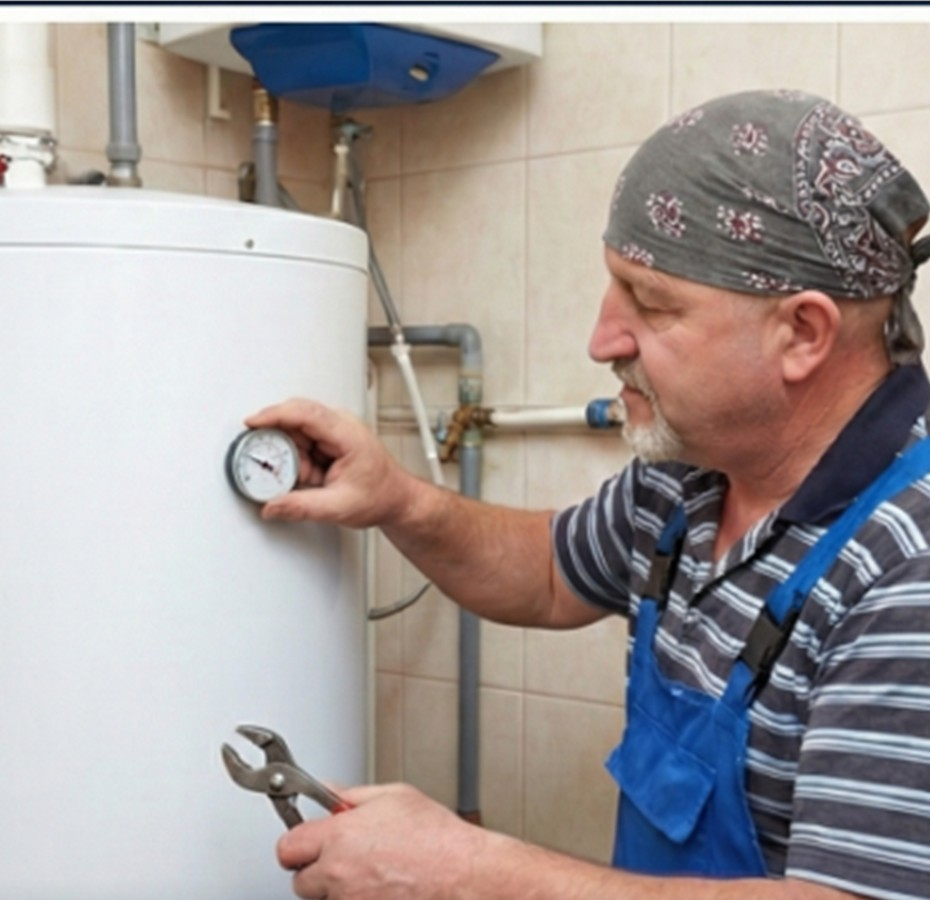
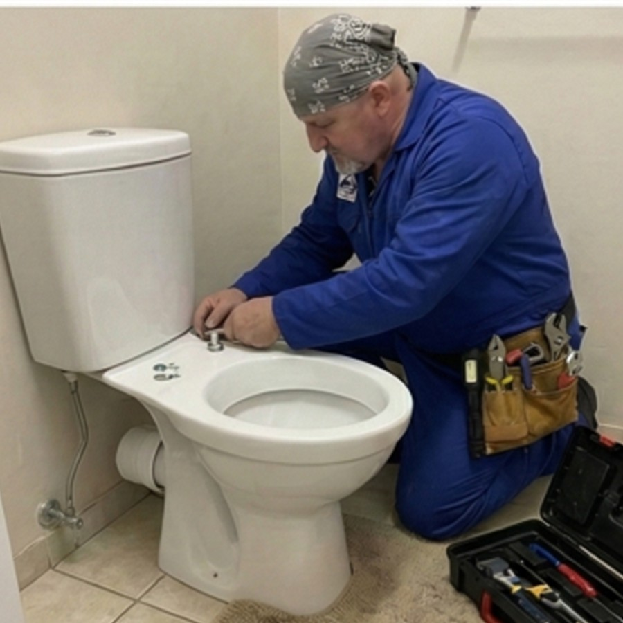

Как выбрать сантехника в Павловском Посаде и не переплатить
Разбираю, на что смотреть перед вызовом мастера: фото работ, прозрачный прайс, специализация и реальные гарантии.
Читать статьюУстраняю протечки и засоры, меняю трубы, устанавливаю унитазы, раковины, ванны, душевые кабины, бойлеры и кухонную сантехнику. Работаю лично, без посредников, с гарантией на результат.

Работаю с квартирами, частными домами, дачами и коммерческими помещениями. 26 видов сантехнических работ — от мелкого ремонта до комплексной замены коммуникаций.


Меня зовут Павел. Я частный сантехник с практическим опытом более 10 лет. Занимаюсь только сантехническими работами: аварийными выездами, заменой труб, монтажом сантехники, бойлеров и обслуживанием систем водоснабжения.
На сайте использованы фотографии мастера с реальных объектов: бойлеры, трубы, душевые, унитазы и кухонная сантехника.




Точная стоимость зависит от объема работ и состояния коммуникаций. Базовые цены помогут понять порядок бюджета еще до звонка.
Выезжаю по всем основным городам восточного Подмосковья. Работаю с квартирами, частными домами, дачами и небольшими коммерческими объектами.
Часто ко мне обращаются, когда нужен сантехник на дом для устранения течи, замены труб, монтажа унитаза, подключения бойлера или прочистки канализации. Работаю с типовыми аварийными ситуациями и с плановым ремонтом в квартирах и частных домах.
Вы звоните или оставляете заявку на сайте, описываете проблему. Я называю ориентировочную стоимость, приезжаю на объект, уточняю детали на месте и выполняю работу. Оплата после приёмки результата.
Основной выезд: Павловский Посад. Также работаю в Электростали, Электрогорске, Ногинске и соседних населённых пунктах по договорённости. Для срочных вызовов лучше сразу звонить.
Разбираю частые вопросы клиентов: как выбрать мастера, что делать при протечке, когда менять трубы и как избежать аварий.
Разбираю, на что смотреть перед вызовом мастера: фото работ, прозрачный прайс, специализация и реальные гарантии.
Читать статьюКороткий алгоритм действий при протечке и список признаков, когда самостоятельный ремонт только увеличит расход воды и ущерб.
Читать статьюОбъясняю ранние признаки засора, почему запахи и медленный слив нельзя игнорировать, и как сократить риск повторной проблемы.
Читать статьюОтветы на самые популярные вопросы клиентов о вызове сантехника, ценах, гарантии и порядке работ.
Если речь о стандартной задаче, например замене смесителя или устранении протечки, цены чаще всего начинаются от 800-1500 рублей. Итоговая стоимость зависит от сложности доступа, состояния труб и необходимости дополнительных материалов.
Да. В аварийных случаях лучше сразу звонить. По Павловскому Посаду и ближайшим районам стараюсь выезжать максимально быстро, чтобы локализовать течь и снизить ущерб.
Да, выполняю как частичную замену проблемного участка, так и полную замену труб и разводки в квартире, доме или санузле во время ремонта.
Да, можно. Если материалы уже куплены, перед монтажом проверю комплектность и совместимость. Если нужны рекомендации, помогу подобрать более надежные комплектующие.
Да, на сантехнические работы предоставляется гарантия. Срок зависит от услуги и используемых материалов, но обычно составляет до 24 месяцев.
Да, можно. Отправьте фото или короткое видео через форму на сайте или по телефону. По ним обычно сразу видно срочность проблемы и понятнее предварительный объём работ.
Да, работаю не только по квартирам. Выезжаю в частные дома, дачи и небольшие коммерческие помещения по Павловскому Посаду и соседним городам.
Позвоните или оставьте заявку на сайте. Расскажу по стоимости, помогу понять срочность проблемы и договоримся о выезде на удобное время.
Свяжитесь удобным способом: по телефону или через форму заявки на сайте.
Ежедневно с 8:00 до 22:00
Срочный выезд в день обращения
Выезд по области — по договорённости
Напишите, что случилось: течь, засор, замена труб, установка бойлера или другой сантехнический вопрос.